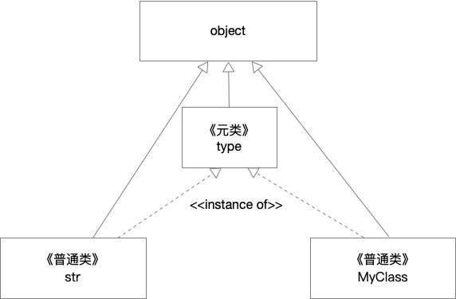

Django是Python最流行的Web框架，功能强大。虽然学习入门门槛较高，但是后期使用起来，避免了很多不必要的造轮子。 其中ORM是Django最主要的特点之一，它将数据库表定义映射为Python对象，避免了SQL语句的字符串编码，使代码变得清晰且易于维护。 Django的ORM代码，是Python元类编程的很好应用，下面一起看看。
from django.db import models
class Student(models.Model):
name = models.CharField(max_length=20)
age = models.SmallIntegerField()
上面代码是定义表的基本例子。我们继承models.Model对象，models.Model对象部分源码如下
class Model(metaclass=ModelBase):
def __init__(self, *args, **kwargs):
# Alias some things as locals to avoid repeat global lookups
cls = self.__class__
opts = self._meta
_setattr = setattr
_DEFERRED = DEFERRED
pre_init.send(sender=cls, args=args, kwargs=kwargs)
# Set up the storage for instance state
self._state = ModelState()
# There is a rather weird disparity here; if kwargs, it's set, then args
# overrides it. It should be one or the other; don't duplicate the work
# The reason for the kwargs check is that standard iterator passes in by
# args, and instantiation for iteration is 33% faster.
if len(args) > len(opts.concrete_fields):
# Daft, but matches old exception sans the err msg.
raise IndexError("Number of args exceeds number of fields")
if not kwargs:
fields_iter = iter(opts.concrete_fields)
# The ordering of the zip calls matter - zip throws StopIteration
# when an iter throws it. So if the first iter throws it, the second
# is *not* consumed. We rely on this, so don't change the order
# without changing the logic.
for val, field in zip(args, fields_iter):
if val is _DEFERRED:
continue
_setattr(self, field.attname, val)
else:
# Slower, kwargs-ready version. fields_iter = iter(opts.fields)
for val, field in zip(args, fields_iter):
if val is _DEFERRED:
continue
_setattr(self, field.attname, val)
kwargs.pop(field.name, None)
可以看到Model的定义使用了元类ModelBase。ModelBase主要处理表映射的Fields字段，具体怎么处理，后面再具体分析。所谓元类，就是普通类的类，也就是普通类是元类的实例。
可以用类名.__class__查看普通类的元类，默认元类是type。《流畅的Python》第21章很透彻的分析了元类，下面这幅图是里面的一张插图，很好的表示了元类与普通类的关系。

我们回来，继续看models.Model源码。
我们看到__init__初始化方法第二行opts=self._meta。这个_meta属性，也是通过元类ModelBase附加给Model类的。它是一个options.Options对象，是管理ORM的核心。
__init__方法剩余的代码主要是处理域和值的映射关系，也是依赖_meta属性管理。完整的代码这里就不粘贴了。
Model对象除了__init__方法外，还有负责验证的clean_fields, clean, validate_unique以及负责保存对象到库的save_base方法，也都依赖_meta属性。
下面是save_base的代码，它通过_meta处理proxy，parents，auto_created，db_name然后创建或更新数据库表。
def save_base(self, raw=False, force_insert=False,
force_update=False, using=None, update_fields=None):
"""
Handle the parts of saving which should be done only once per save,
yet need to be done in raw saves, too. This includes some sanity
checks and signal sending.
The 'raw' argument is telling save_base not to save any parent
models and not to do any changes to the values before save. This
is used by fixture loading.
"""
using = using or router.db_for_write(self.__class__, instance=self)
assert not (force_insert and (force_update or update_fields))
assert update_fields is None or update_fields
cls = origin = self.__class__
# Skip proxies, but keep the origin as the proxy model.
if cls._meta.proxy:
cls = cls._meta.concrete_model
meta = cls._meta
if not meta.auto_created:
pre_save.send(
sender=origin, instance=self, raw=raw, using=using,
update_fields=update_fields,
)
# A transaction isn't needed if one query is issued.
if meta.parents:
context_manager = transaction.atomic(using=using, savepoint=False)
else:
context_manager = transaction.mark_for_rollback_on_error(using=using)
with context_manager:
parent_inserted = False
if not raw:
parent_inserted = self._save_parents(cls, using, update_fields)
updated = self._save_table(
raw, cls, force_insert or parent_inserted,
force_update, using, update_fields,
)
# Store the database on which the object was saved
self._state.db = using
# Once saved, this is no longer a to-be-added instance.
self._state.adding = False
# Signal that the save is complete
if not meta.auto_created:
post_save.send(
sender=origin, instance=self, created=(not updated),
update_fields=update_fields, raw=raw, using=using,
)
简单看了models.Model的源码后，我们接下来简单分析下ModelBase代码。
class ModelBase(type):
"""Metaclass for all models."""
def __new__(cls, name, bases, attrs, **kwargs):
super_new = super().__new__
# Also ensure initialization is only performed for subclasses of Model
# (excluding Model class itself).
parents = [b for b in bases if isinstance(b, ModelBase)]
if not parents:
return super_new(cls, name, bases, attrs)
# Create the class.
module = attrs.pop('__module__')
new_attrs = {'__module__': module}
classcell = attrs.pop('__classcell__', None)
if classcell is not None:
new_attrs['__classcell__'] = classcell
attr_meta = attrs.pop('Meta', None)
# Pass all attrs without a (Django-specific) contribute_to_class()
# method to type.__new__() so that they're properly initialized
# (i.e. __set_name__()).
contributable_attrs = {}
for obj_name, obj in list(attrs.items()):
if _has_contribute_to_class(obj):
contributable_attrs[obj_name] = obj
else:
new_attrs[obj_name] = obj
new_class = super_new(cls, name, bases, new_attrs, **kwargs)
abstract = getattr(attr_meta, 'abstract', False)
meta = attr_meta or getattr(new_class, 'Meta', None)
base_meta = getattr(new_class, '_meta', None)
app_label = None
# Look for an application configuration to attach the model to.
app_config = apps.get_containing_app_config(module)
if getattr(meta, 'app_label', None) is None:
if app_config is None:
if not abstract:
raise RuntimeError(
"Model class %s.%s doesn't declare an explicit "
"app_label and isn't in an application in "
"INSTALLED_APPS." % (module, name)
)
else:
app_label = app_config.label
new_class.add_to_class('_meta', Options(meta, app_label))
if not abstract:
new_class.add_to_class(
'DoesNotExist',
subclass_exception(
'DoesNotExist',
tuple(
x.DoesNotExist for x in parents if hasattr(x, '_meta') and not x._meta.abstract
) or (ObjectDoesNotExist,),
module,
attached_to=new_class))
new_class.add_to_class(
'MultipleObjectsReturned',
subclass_exception(
'MultipleObjectsReturned',
tuple(
x.MultipleObjectsReturned for x in parents if hasattr(x, '_meta') and not x._meta.abstract
) or (MultipleObjectsReturned,),
module,
attached_to=new_class))
if base_meta and not base_meta.abstract:
# Non-abstract child classes inherit some attributes from their
# non-abstract parent (unless an ABC comes before it in the
# method resolution order).
if not hasattr(meta, 'ordering'):
new_class._meta.ordering = base_meta.ordering
if not hasattr(meta, 'get_latest_by'):
new_class._meta.get_latest_by = base_meta.get_latest_by
is_proxy = new_class._meta.proxy
首先ModelBase继承type，所有的元类都继承type。接下来__new__方法，它才是Python真正的构造函数。由于普通类是元类的实例，当定义Model对象时，ModelBase的__new__方法将被调用。
注意是定义时，而不是调用时。就是类体本身属性和方法的初始化，都会有对应元类的__new__方法构建。__new__是一个类方法，接受的三个位置参数分别是要创建的类类名，继承的基类对象元组，以及类所属属性的映射。
下面是__new__部分代码注释。
# Meta属性会再赋值给__meta
attr_meta = attrs.pop('Meta', None)
# 调用父类的__new__创建类对象，也就是Model对象
new_class = super_new(cls, name, bases, new_attrs, **kwargs)
# 给Model增加_meta属性, 转化成了Options对象
new_class.add_to_class('_meta', Options(meta, app_label))
# 处理抽象父Model对应的域
for base in reversed([new_class] + parents):
# Conceptually equivalent to `if base is Model`.
if not hasattr(base, '_meta'):
continue
# Skip concrete parent classes.
if base != new_class and not base._meta.abstract:
continue
# Locate OneToOneField instances.
for field in base._meta.local_fields:
if isinstance(field, OneToOneField):
related = resolve_relation(new_class, field.remote_field.model)
parent_links[make_model_tuple(related)] = field
# 给Model对象追加objects作为manager
if not opts.managers:
if any(f.name == 'objects' for f in opts.fields):
raise ValueError(
"Model %s must specify a custom Manager, because it has a "
"field named 'objects'." % cls.__name__
)
manager = Manager()
manager.auto_created = True
cls.add_to_class('objects', manager)
可以看到ModelBase主要是给Model对象追加_meta属性及objects manager，并利用Options对象校验Model和父Model域定义。Options代码这里不再分析，明天写写Model的Field对象。